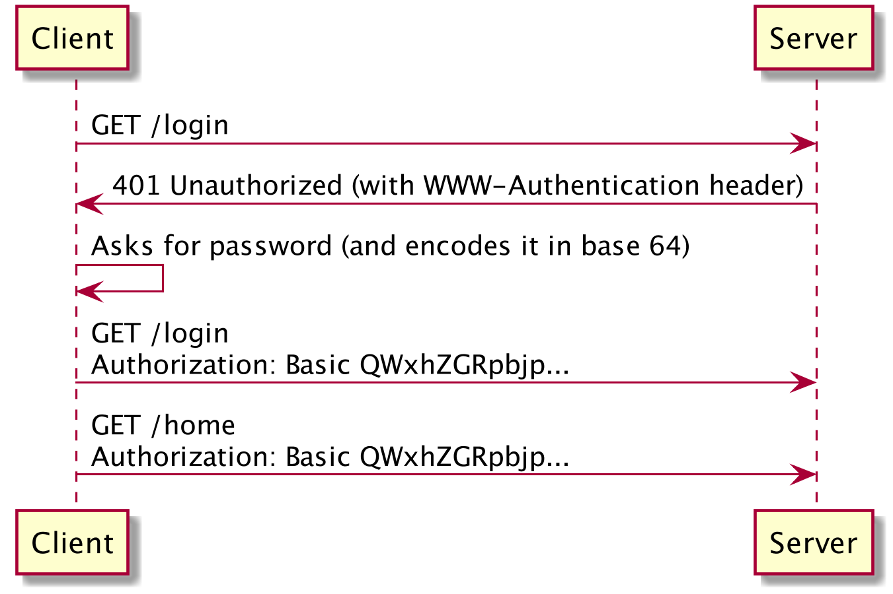
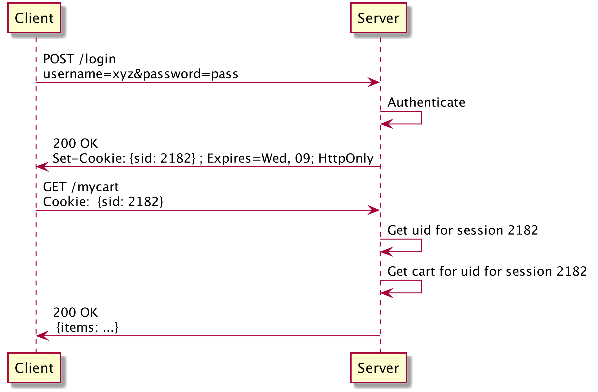

Hypermedia/Backend/Sessions, login and state
Vittorio Zaccaria
Created: 2020-01-27 Mon 11:03
Authentication
Meaning
Proving or showing something to be true, genuine, or valid, e.g.:
Hei, I am Bill Gates, transfer 1M$ to this bank account.
How can you trust that a message you receive is genuine?
Methods to do it in a web app
- HTTP basic auth over HTTPS;
- Cookies and session management;
- Token in HTTP headers (e.g. OAuth 2.0 + JWT); not discussed here
- Query Authentication with additional signature parameters; not discussed here
HTTP basic auth over HTTPS

- There is no easy way to log out the user as the client will always send the Authorization header (i.e., his/her password) in each subsequent request
- Server must validate on every subsequent request the credentials
Cookie session management

- A cookie can be a Unique session identifier: a number assigned by the server that can be used by it to map it back to a user
- Every request made to the same origin will contain that cookie in the
HTTPrequest header
Cross site scripting (XSS)
- Plain cookies are visible to all pages in the browser through
document.cookie. - XSS attacks try to steal this information. For example:
Attacker posts some html in a message to
www.megaforum.com:- If another user of the forum clicks the link, all his/her cookies accessible
from
www.megaforum.comare sent to the attacker.
- Original server must issue
HttpOnlycookies to avoid this.
Cross site request forgery
On the same forum, if the attacker posts an image such as:

this could trigger the transaction for a viewer authenticated (i.e., with a cookie) with the bank.
See this link for mitigations. As a side note, OTP and or additional codes are used from banks to mitigate this.
Introducing session state
Demo D3.0 - Add a user with login and logout actions to the OpenAPI spec
Demo D3.1 - Add cookie-session
- Check with curl:
curl -X POST --header 'Content-Type: application/x-www-form-urlencoded' --header 'Accept: application/json' -d 'username=1&password=1' 'http://localhost:8080/v2/user/login' -v